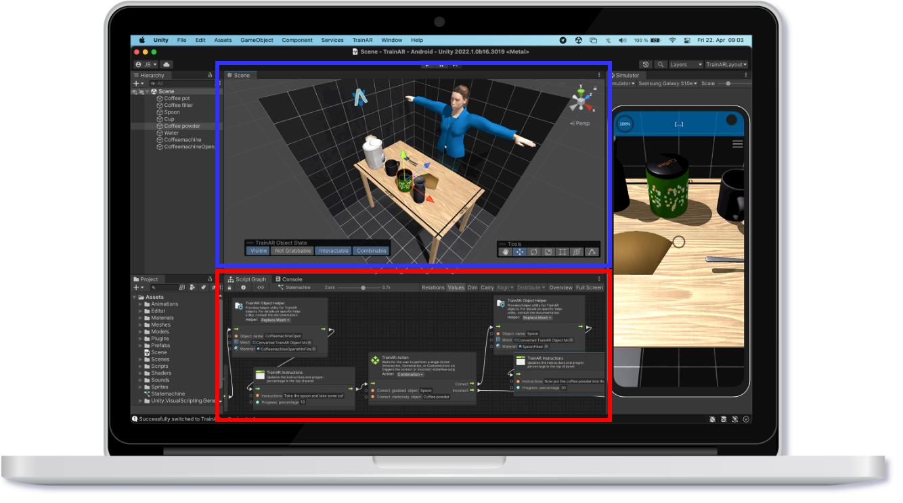

TrainAR - The Basic Concepts
The TrainAR Authoring Tool can be utilized by understanding two basic concepts: The TrainAR Object and the TrainAR Stateflow. If you want to create a TrainAR scenario/training, you have to import 3D models (e.g. from the Assetstore, external websites or from a 3D scanner) and then convert them into TrainAR Objects. Once converted, they automatically inherit TrainAR-specific functionality/behaviours and states (position, rotation, scale, visibility, grabbability, interactability, combinability). TrainAR objects can then be referenced in the TrainAR Stateflow, which determines what action has to be taken next by the user of the TrainAR training and which kind of instruction, insight or feedback should be provided to the user. It additionally can manipulate states of TrainAR Objects during the training.

As visualized in this figure, the TrainAR Authoring Tool provides an abstraction layer to easily access both. In blue is the Scene showing all TrainAR Objects currently in the training assembly. Here, their initial state can be manipulated (e.g. they can be positioned, rotated, they can prohibit being grabbed and be invisible at the start of the training). In Red is the TrainAR stateflow, where the flow of the training can be created and altered. The TrainAR Objects and TrainAR Stateflow can be connected by referencing TrainAR Objects in the TrainAR Stateflow by name.
The rest is handled by the framework. Features like the onboarding animations, tracking solutions, assembly placement, interaction concepts, layered feedback modalities, expert insights, state management and training assessments are taken care of automatically. Notably, they can also be altered and expanded upon as described in the Advanced Options, if necessary.
The following reference video shows the example TrainAR training shipped with the repository. On the left, the deployed TrainAR training is shown from the perspective of the user that is using the training and trying to interact with TrainAR Objects. On the right, the TrainAR Stateflow from the perspective of the author is visualized that determines the training procedure:
TrainAR Documentation
The TrainAR framework ships with this example training of "preparing a coffee by using a coffee machine" to provide a basic point of reference and startingpoint to authors. Beyond that, the documentation provides an Installation & Setup Guide and a Getting Started Guide that explains how to create a very basic, first training scenario in less than half an hour from scratch. Furthermore, a full documentation on TrainAR Objects and the TrainAR Stateflow with all its TrainAR Visual Scripting Nodes is provided. Finally, if experienced authors want to utilize TrainAR beyond the envisioned scope, there is multiple levels of advanced options that provide more powerful customization options to authors as described in the Advanced Options.